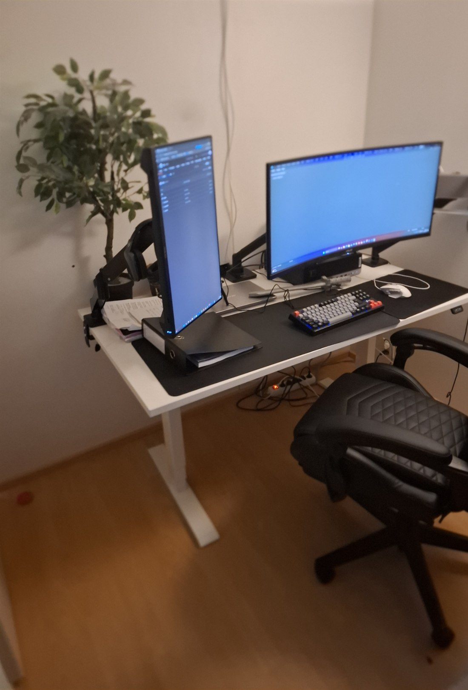

Sähköpöytä
Korkeussäädön ansiosta voin vaihtaa istumisen ja seisomisen välillä. Seison yleensä silloin, kun luen uutta asiaa, ja istun kun kirjoitan koodia.
Mika Pirttimäki
Opiskelupaikka
Tämä on se nurkka, jossa olen kirjoittanut kaikki tämän kurssin HTML- ja CSS-tiedostot. Pöytä ei ole kallis eikä hieno, mutta se on rakennettu pala palalta sellaiseksi, että sen ääreen on helppo istua myös väsyneenä.
Aloitin keittiön pöydältä kannettavan kanssa. Se toimi muutaman viikon, kunnes huomasin, että niska jumittui ja koodi jäi kesken aina kun piti siirtää kone pois tieltä. Pysyvä paikka muutti opiskelun rytmin kokonaan.

Jokaiselle tavaralle on jokin syy. Nämä viisi ovat ne, joita käytän joka kerta kun avaan editorin.
Korkeussäädön ansiosta voin vaihtaa istumisen ja seisomisen välillä. Seison yleensä silloin, kun luen uutta asiaa, ja istun kun kirjoitan koodia.
Leveällä näytöllä on editori ja pystyasentoon käännetyllä näytöllä selain. Näen koodin ja lopputuloksen yhtä aikaa, eikä ikkunoita tarvitse vaihdella.
Varret nostavat näytöt silmien korkeudelle ja vapauttavat pöytäpintaa. Tämä oli pienin muutos, jolla sai eniten tilaa.
Tunnuntaa on mukava kirjoittaa pitkiäkin pätkiä, ja värilliset näppäimet auttavat löytämään erikoismerkit nopeasti. Niitä HTML-koodissa tarvitaan paljon.
Säädettävä tuoli on se väline, jonka merkityksen huomaa vasta kolmannen tunnin jälkeen. Selkänoja ja käsinojat pitävät ryhdin kasassa.
Nidoin johdot pöydän alle yhteen nippuun ja laitoin jatkojohdon kiinni pöydän runkoon. Pöytä näyttää heti siistimmältä, ja pöytälevyn voi nostaa ylös ilman että jokin kiristyy.
Vain se, mitä juuri nyt teen, saa olla pöytäalustalla. Muistiinpanovihko on kulman takana ja puhelin laatikossa. Keskittyminen pysyy koodissa.
Kun valo tulee sivusta eikä takaa, näytöllä ei ole heijastuksia eikä silmiä tarvitse siristellä. Illalla himmennän näytöt ja sytytän pienen lampun.
Hyvä työpiste ei tee kenestäkään parempaa koodaria, mutta se poistaa tekosyyt olla aloittamatta.